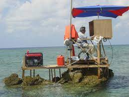
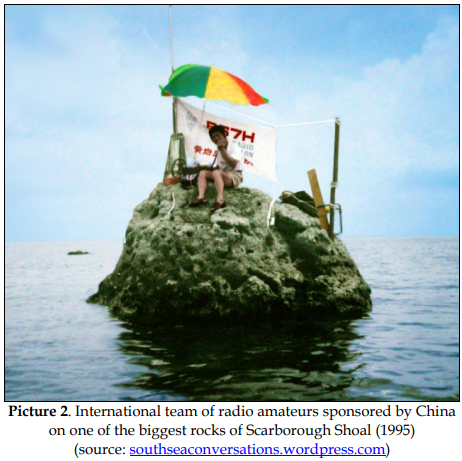

I wonder how Gil will set up a working platform for his radio? He did mention that he may possibly use the rig-in-a-box concept. Thee is not much room on a rock at high tide. Bill WB6JJJ   Bob, W6RGG, 2007 From: Chat <chat-bounces@ncdxc.org> On Behalf Of Bill - WB6JJJ via Chat
Sent: Thursday, July 20, 2023 9:33 PM
To: 'Al N6TA' <al.n6ta@gmail.com>; Jfminlg@verizon.net
Cc: chat@ncdxc.org
Subject: Re: [NCDXC Chat] FW: Scarborough Shoal plans announced Recently, I sent Gil my questionnaire for our WVDXC DXpedition funding but I have not received a response so far. That earlier email was quickly returned so I’m hoping that Gil is serious and replies soon. I have CW and SSB confirmed QSOs with BS7H, in 1995 and in 2007. I would like to see it happen again. 73, Bill WB6JJJ Sherwood, Oregon Thanks to Jeff, I decided to learn more about Scarborough and its history of who owns or is in charge. The linked document is 40 some pages and it seems quite complete and has links t numerous sources of further background, historical and quite current. I almost got sucked into that rathole but pulled back in time. I do not know that there is an 'agenda' of the author but if you accept the information, it sure appears that the Philippines have a valid claim, certainly more so than the Chinese. Having said this, does anyone know why the prior DXPeditions there were with the BS prefix and not one assigned to DU? This entity sems to be entirely in limbo and either but especially the Philippines, could land and use permission from their government. One little turd in this is that neither party claiming it wants to start an confrontation such as the one that happened in 2012. Details, details... Check it out if you want to know more. On Tue, Jun 27, 2023 at 11:27 AM Jeff Miller via Chat <chat@ncdxc.org> wrote: https://www.irasec.com/IMG/UserFiles/Files/04_Publications/Notes/Geopolitics_of_Scarborough_Shoal.pdf From: Chat [mailto:chat-bounces@ncdxc.org] On Behalf Of Bill - WB6JJJ via Chat
Sent: Tuesday, June 27, 2023 10:24 AM
To: 'Paul N6PSE'; 'Al N6TA'
Cc: 'NCDXC Discussion List'
Subject: Re: [NCDXC Chat] Scarborough Shoal plans announced As a member of the Willamette Valley DX Club DXpedition (Oregon) funding committee, I sent Gil an email last night and below is his reply. Bill WB6JJJ ----------------------------------- I'm laying the groundwork for the issuance of the license. We were able to dig up the DX0S permit that was issued in 2007 during the BS7H activity. Will use that as supporting document for our request. The fishermen who go to Scarborough usually stay there for 3-4 weeks. I'll go with them and use the protection of their company. I'd be happy to be able to operate for a week, continuously or intermittently. This will take place during the first half of next year as it is typhoon season now. dx0neS will be the callsign. You may look it up on QRZ. An offshoot of my recent DX0NE DXpedition. ---------------------------------- If Gil 4F2KWT presents a coherent plan, there will be sufficient funds for his plans. While I don't speak for the Foundations, I know that they are eager to support rare DX. His DX0NE operation was rather feeble with 4.2% of contacts with North America. He mostly worked JA's Over on Eham in the DX Forum, one of them contacted Gil and asked about his antenna plans. He replied that he was going to use a 6M/10M dual band antenna. Not a formula for a rousing success in my view. Nobody has replied that I saw so here goes. Any serious effort to activate such a rare one deserves attention. Support will depend on proposed plans if help is to be obtained from the usual sources. I hope he is making up his proposal and will get some help. If it is only a trip to 'explore', maybe it should be done without any effort to operate to save money for a real operation. I would think that hitching a ride on one of the fishing boats in the area would be relatively inexpensive and could answer a lot of questions. Those fishermen may already know a lot about just where to go and how to achieve his goal of 'landing on something above water. I worked DX0NE once on FT8 to earn that mode. I did not try more since I did not need it. But, was it 'rather minimal' or not? He made about 11,420 contacts in 7 days or about 1,600 per day from a single transmitter and one operator. From an inhabited island with power. By contrast, VP6A made 61,816 contacts in 13 days or about 4,750 per day. They used 3 or 4 transmitters. About 1200-1500 contacts per TX. And, there were a lot of operators. No hotels. Maybe he did OK if this is how you want to look at it. Regardless, it is going to be interesting to see what develops. If it gets serious, I will support it and then hope to get a SSB contact to go with my two CW bands.
_______________________________________________
Chat mailing list
Chat@ncdxc.org
http://mail.ncdxc.org/mailman/listinfo/chat_ncdxc.org
|